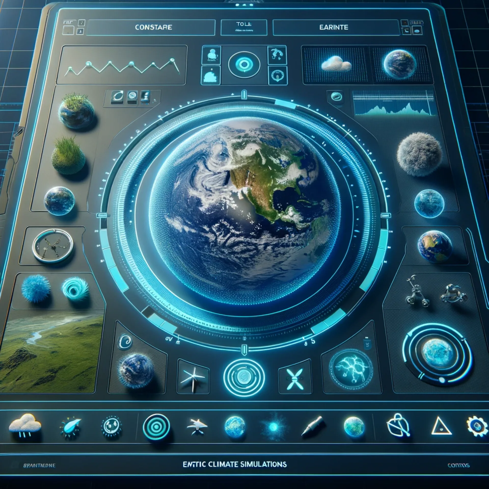
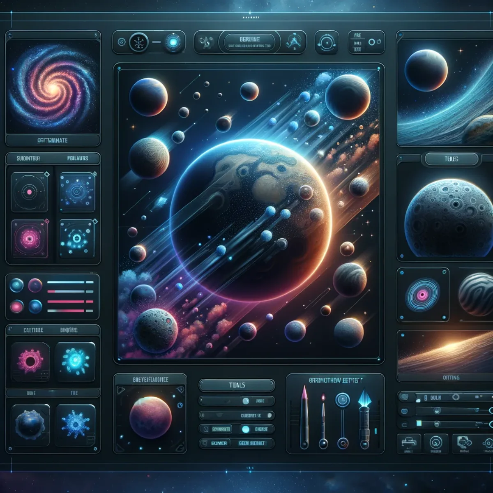
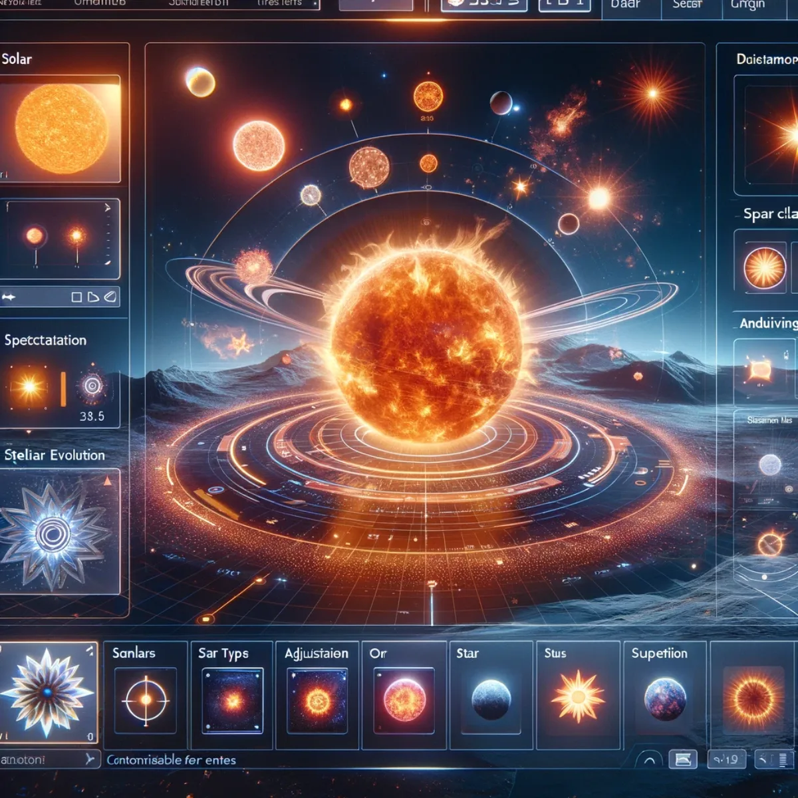
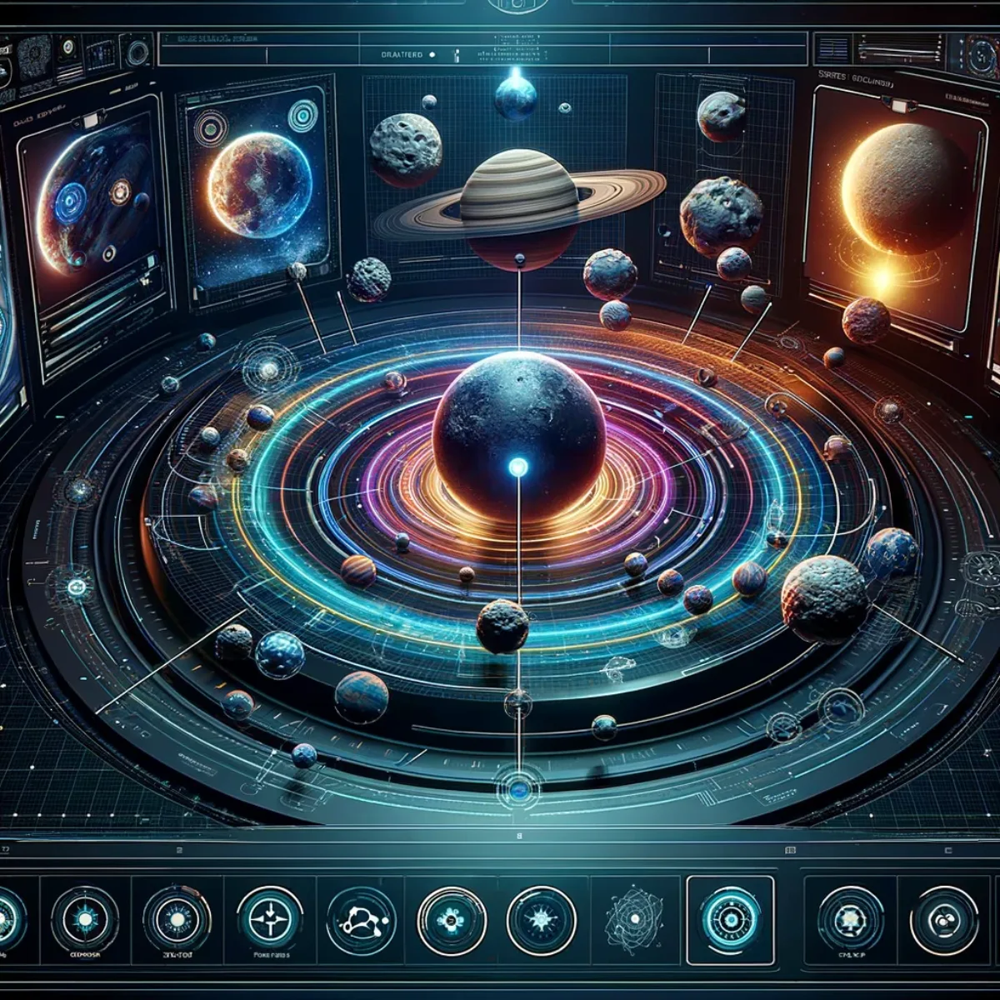
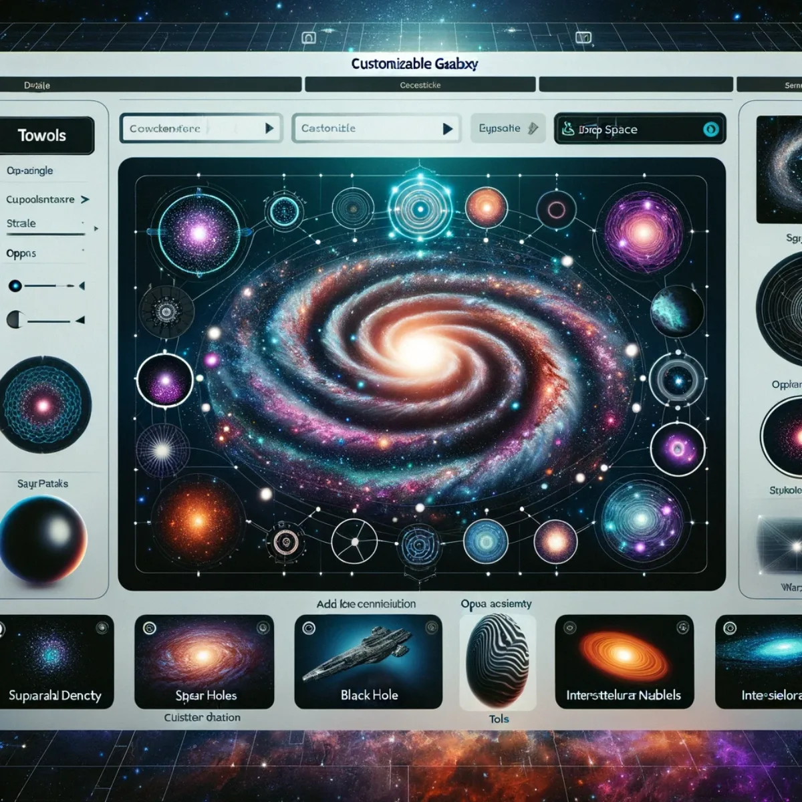

Pathways / Mind & self
World Builder
Five nested scales, from a single hillside to a whole galaxy: build your own worlds, then step back and build the sky around them. Every world you make is yours to keep and to keep changing, not a level rented from someone else's platform.

Sculpt your own Earth
Earth models
Sculpt your own Earth here: shape the terrain, experiment with ecosystems, and set natural events in motion. Build anything from a calm landscape to wild, untamed country, and watch your world come alive with each adjustment. The tools are meant to be simple to pick up yet deep to explore, and every bit of the planet you make is yours to edit, keep and revisit.

Craft your own planets and moons
Planetary & moon models
Design your own celestial bodies, one world at a time. Carve craters into moons, cut valleys across alien worlds, and spin rings around gas giants. There's a universe of possibility to work with, whether you're doing it to learn, to teach, or simply to see what you can dream up; the worlds you shape here stay with you.

Forge your own stars
Solar & stellar models
Forge stars and ignite solar flares of your own making. From calm red dwarfs to raging supernovae, you can simulate the whole lifecycle of a star: adjust its luminosity, set its spectral class, and watch it born and burn out. It's more than a model; it's your own canvas for telling stories against the vast backdrop of the universe.

Arrange your own system
Solar system models
Arrange a solar system of your own, or reimagine ours. Align the planets, choreograph their orbits, and set meteor showers loose, becoming the maestro of your own celestial mechanics as you balance gravity and motion. Whether you're teaching, learning or just curious, the system you build is yours to run, study and change.

Spin your own galaxies
Galaxy models
Spin galaxies and thread the fabric of the universe yourself. Spiral arms, glowing nebulae and pulsing quasars are all yours to place, so you can build something that rivals the real night sky. A storyteller setting a scene among the stars, or just following your curiosity to the largest scale there is: this is your sandbox, and it stretches as far as you want to take it.
Keep exploring